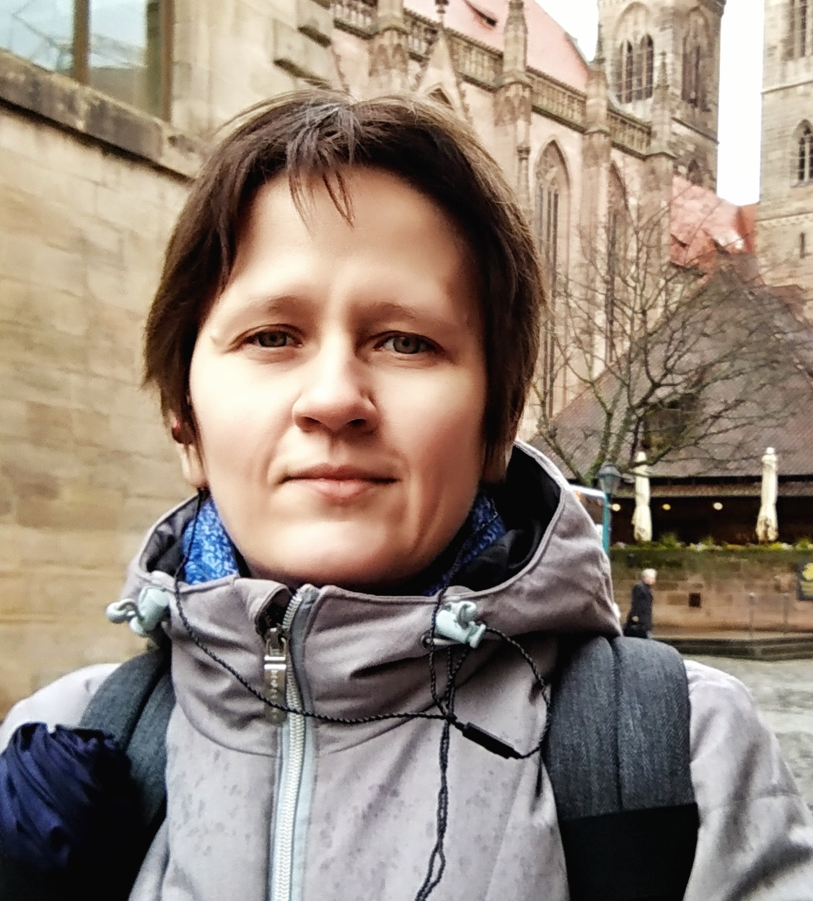

Интерактивная исследовательская платформа · Digital Humanities Interactive Research Platform · Digital Humanities
Интерактивная карта всех городов с централизованным водоснабжением — от Варшавы до Владивостока. Interactive map of all cities with centralised water supply — from Warsaw to Vladivostok.
Сравнение охвата инфраструктурой по 50 губерниям Европейской России: электричество, трамваи, канализация, телефон, телеграф. Compare infrastructure coverage across 50 provinces of European Russia: electricity, trams, sewerage, telephone, telegraph.
862 города · 50 губерний · Европейская Россия · 1910 862 cities · 50 provinces · European Russia · 1910
Три волны холеры сопоставлены с обеспеченностью городов централизованным водоснабжением. Three cholera waves correlated with municipal waterworks coverage across the empire.
Детальная база данных по 11 городам губернии: думские решения, данные об эпидемиях, санитарные расходы, 1870–1917. Deep-dive database of 11 cities: municipal council decrees, epidemic records, sanitary expenditures, 1870–1917.
Как использовать ресурсHow to use this resource
Используйте интерактивные карты и сортируемые таблицы в курсах по городской истории и истории окружающей среды. Визуальные данные сразу готовы к показу в аудитории. Use interactive maps and sortable tables in urban and environmental history courses. Visual data is ready for in-class display and discussion.
Прослеживайте диффузию инфраструктуры, коррелируйте с показателями смертности, экспортируйте данные. Все источники и методы задокументированы. Trace infrastructure diffusion, correlate with mortality data, export datasets. All sources and methods are fully documented.
Найдите свой город на карте водопроводов, изучите историю холерных эпидемий в губернии, сравните с региональным кейсом Новгородской губернии. Find your city on the waterworks map, explore your province's cholera history, compare with the Novgorod regional case study.
Ресурс основан на оригинальном архивном исследовании и опубликованных источниках XIX — начала XX века. Все данные верифицированы и задокументированы. This resource is based on original archival research and published sources from the 19th–early 20th centuries. All data are verified and fully documented.

к.и.н. · независимый исследователь · специалист по экологической истории городов PhD (History) · independent researcher · specialist in environmental urban history
Специалист в области экологической истории городов Российской империи и раннего СССР (1870–1930-е гг.). Сфера интересов: история водоснабжения и санитарных реформ, гидроэнергетика, городское самоуправление. Руководитель грантов РНФ и РФФИ, автор более 50 работ (Scopus, Web of Science). Доклады: EAUH (Антверп, 2022), ESEH (Бристоль, 2022), ICOHTEC (Острава, 2022), ВДНХ-XIX (ЕУ СПб, 2026). Specialist in the environmental history of Russian and Soviet cities (1870s–1930s). Research interests: water supply and sanitary reform, hydropower development, municipal self-government. PI on grants from the Russian Science Foundation and RFBR. Author of 50+ publications in Scopus and Web of Science journals. Conferences: EAUH (Antwerp, 2022), ESEH (Bristol, 2022), ICOHTEC (Ostrava, 2022), ВДНХ-XIX (EU SPb, 2026).